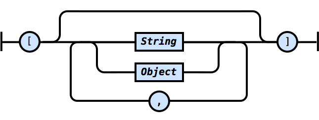
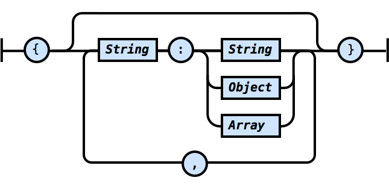

The TSON (Typeable Simple Object Notation) is based on the JSON and JSV data formats. It is intended to be a storage and not a transmission format, and one that is editable by humans. As such it includes the following primary differences which benefit humans vs. computers:
TSON only supports 3 data types:
Comments are not considered to be data. Because TSON supports unquoted strings, a string can represent a number, boolean, null as defined by JSON. If you stick to these data types you can easily convert TSON to JSON. If you don't need JSON compatability, you can define other custom data types of your choosing.
TSON syntax is extremely simple. Data in both JSON and JSV formats can be represented in TSON, but TSON is superset in that it contains support for comments.
An unquoted string is defined as follows:
Unquoted strings may include any characters that are not in the list of TSON "punctuation" characters:
" , : [ ] { } #
Whitespace at the beginning and end of an unquoted string is trimmed off and is not considered part of the string. For example:
a: A string in space # with a comment
The value of a is simply A string in space. If you need the whitespace, quote the string.
A quoted string is defined as follows:
Within a quoted string any text is valid, including newlines. A double quote may be included by typing two in a row ("").
A string is either quoted or unquoted:
An array is defined as follows:

Finally, an object is defined as follows:

The exception is the root object, where the curly brackets are optional.
Here is an example TSON data file:
# TSON data file example that
# is convertible to JSON
a: some data,
b: some more data,
# Blank lines are fine
"c#1": 10, # Keys can be quoted too if needed
e: # This will be an object
{
x: true,
y: false
},
f: # Now let's try an array
[
10, 20, 30
],
g: "Finally, let's create a
long string that
has line breaks in
it for fun."
# That's it. Try cutting and pasting this in to
# the formatters and converters to see what
# happens!